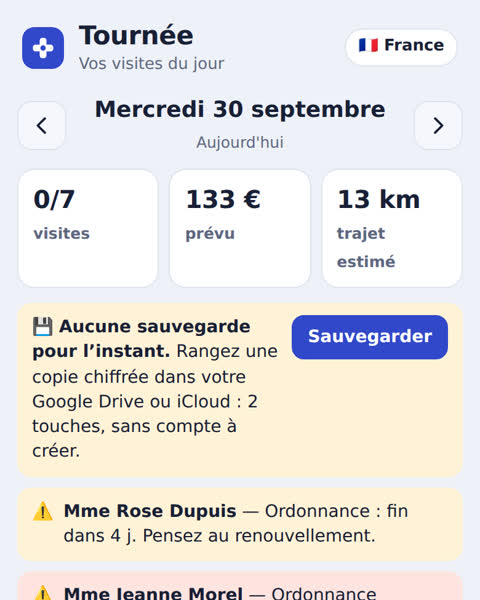
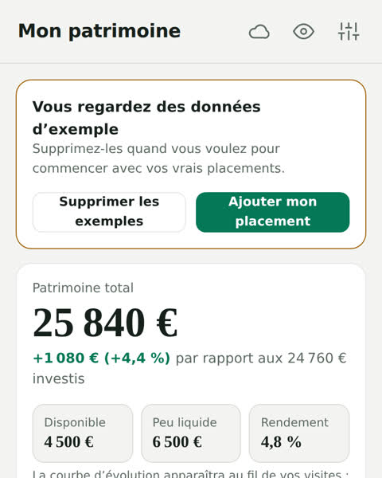
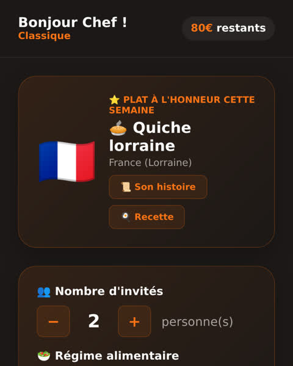
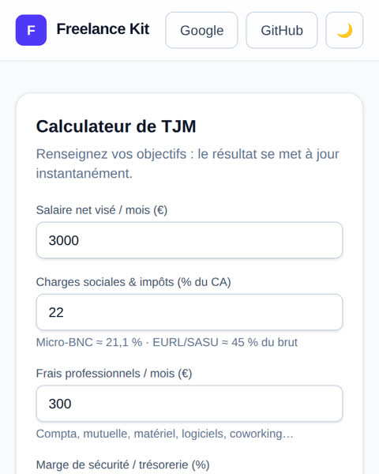
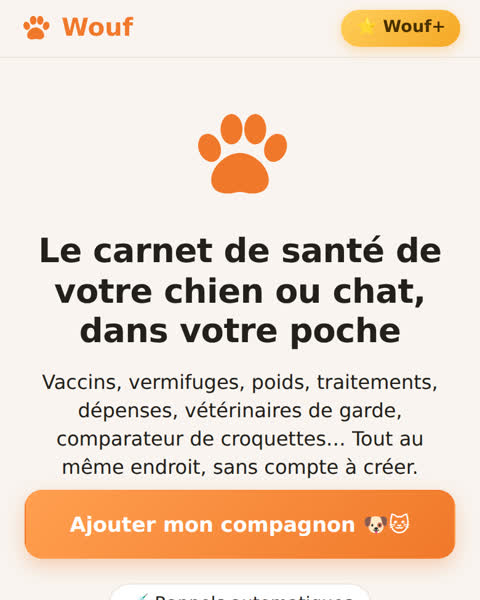

GratuitSanté
Infikit
L’assistant des infirmières à domicile : tournée, fiches patients, ordonnances en photo, cotations et comptabilité. Fonctionne hors connexion.
Ouvrir Infikit →Cinq applications que j’ai conçues et mises en ligne. Rien à installer, sinon l’app elle-même sur l’écran d’accueil si vous le souhaitez.
Rien à installer, sinon l’app elle-même sur l’écran d’accueil si vous le souhaitez.

L’assistant des infirmières à domicile : tournée, fiches patients, ordonnances en photo, cotations et comptabilité. Fonctionne hors connexion.
Ouvrir Infikit →
Bourse, crowdlending, immobilier, livrets : tout au même endroit. Répartition, échéances et alertes calculées automatiquement, simulateurs et assistant IA.
Ouvrir Patrimoine AI →
« On mange quoi ce soir ? » Recettes du monde, cuisiner avec ce qu’on a, menu de la semaine, courses et budget.
Ouvrir Gourmet AI →
Calculez votre taux journalier et préparez vos devis en quelques minutes.
Ouvrir Freelance Kit →
Le carnet de santé du chien et du chat : vaccins, rappels, éducation. Une application complète, avec son propre site.
Découvrir Wouf →Décrivez-moi ce qui vous fait perdre du temps : devis gratuit, prix fixé avant de commencer, première version à tester.
Demander un devis gratuit